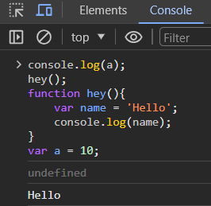

Java Hoisting
Hoisting is a concept that enables us to extract values of variables and functions even before
initializing/assigning value without getting errors and this happens during the 1st phase (memory
creation phase) of the Execution Context.
Features of Hoisting:
- In JavaScript, Hoisting is the default behavior of moving all the declarations at the top of the
scope before code execution. Basically, it gives us an advantage that no matter where functions
and variables are declared, they are moved to the top of their scope regardless of whether their
scope is global or local.
- It allows us to call functions before even writing them in our code.
Sequence of variable declaration: The following is the sequence in which variable declaration and initialization occur.
Declaration –> Initialisation/Assignment –> Usage
By using var :
console.log(a);
hey();
function hey() {
var name = 'Someone';
console.log(name);
}
var a = 10;
OUTPUT:

Exaplaination:
- In JS program the console want to print the value of 'a' but it show output as undefined because the 'a' is defined after the console command that's why it only show the value as undefined.
- If we do not declare the 'a' as variable it show the error in code.
- If we declare the 'a' as before the console command. It show the output as '10'.